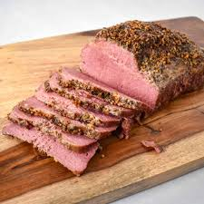
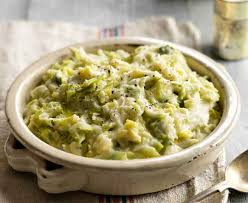
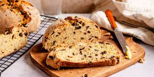
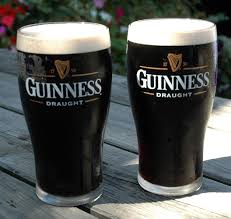

Explora un poco de esta cultura

Un clásico reconfortante. Carne de ternera curada en salmuera y cocida a fuego lento con repollo y zanahorias, ideal para las festividades tradicionales.

La esencia de la cocina casera. Un puré de patatas cremoso mezclado con col o col rizada y mucha mantequilla fundida. Sencillo y delicioso.
El plato nacional por excelencia. Un guiso robusto de cordero tierno, patatas, cebollas y perejil que calienta el alma en los días nublados.

Pan tradicional sin levadura que utiliza bicarbonato sódico. Tiene una corteza crujiente y un interior denso perfecto para untar mantequilla salada.
Explora la variedad de Ales y Red Ales locales. Cervezas con cuerpo, notas de malta tostada y una tradición que se remonta a siglos atrás.

El icono de Dublín. Disfruta de la famosa "stout" negra con su espuma cremosa característica y sus inconfundibles toques de café y cacao.